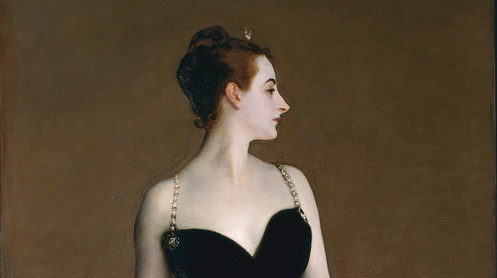

<head>
<meta charset="UTF-8" />
<meta name="keywords" content="drawing, painting" />
<meta name="description" content="drawings by Sunjy" />
<title>Sunjy</title>
<link rel="shortcut icon" type="image/x-icon" href="../../mImages/mCommon/favicon.ico" media="screen" />
<link rel="stylesheet" type="text/css" href="../../mCsses/mCommon/mCssA.css" />
<link rel="stylesheet" type="text/css" href="../../mCsses/mCommon/mCssB.css" />
<link rel="stylesheet" type="text/css" href="../../mCsses/mCommon/mCssC.css" />
<link rel="stylesheet" type="text/css" href="../../mCsses/mCommon/mCssD.css" />
<link rel="stylesheet" type="text/css" href="../../mCsses/mContent/mCssA.css" />
<link rel="stylesheet" type="text/css" href="../../mCsses/mContent/mCssB.css" />
<link rel="stylesheet" type="text/css" href="../../mCsses/mContent/mCssC.css" />
<link rel="stylesheet" type="text/css" href="../../mCsses/mContent/mCssD.css" />
</head>
<script type="text/javascript" src="../../mScripts/mContent/mContentAA.js" /></script>
<script type="text/javascript" src="../../mScripts/mContent/mContentAB.js" /></script>
<script type="text/javascript" src="../../mScripts/mContent/mContentAC.js" /></script>
<script type="text/javascript" src="../../mScripts/mContent/mContentAD.js" /></script>
<script type="text/javascript"></script> 
<script type="text/javascript">
document.write('<div class="mImgAbsolute"></div>');
/*
document.write('<p class="mFontSizeBColor" />From a white paper...</p>');
document.write('<table class="center"><tr><td>');
document.write('');
document.write('</td></tr></table>');
*/
</script>


<script type="text/javascript">
document.write('<p class="mFontSizeBColor" />Portrait of Madame X</p>');
document.write('<p class="mFontSizeSColor" />“Portrait of Madame X” by John Singer Sargent shows a socialite named Virginie Amélie Avegno Gautreau, an American expatriate who was married to a French banker.<br><br>The portrait shows a woman posing in a black satin dress with jeweled straps. The pale flesh tone of the subject contrast against a dark-colored dress and background.<br><br>The model was who became notorious in Parisian high society for her beauty and rumored infidelities. Her beauty made her an object of fascination for artists.<br><br>This painting was not commissioned but was at Sargent’s request. Sargent wrote to a friend:<br><br>“I have a great desire to paint her portrait and have reason to think she would allow it and is waiting for someone to propose this homage to her beauty.” <br><br>This painting resulted in a scandal following the painting’s controversial reception at the Paris Salon of 1884 as people were shocked and scandalized.<br><br>The attempt to preserve the subject’s anonymity by calling the picture “Portrait de Mme ***” was unsuccessful, and the sitter’s mother requested that Sargent withdraw the painting from the exhibition.<br><br>Sargent refused, but later, he overpainted the shoulder strap to raise it and make it look more securely fastened. Initially, as exhibited, the right strap on the dress was painted as having slipped off the shoulder.<br><br>He also changed the title to “Madame X,” a name more dramatic and mysterious and to give the illusion of the woman archetype.<br><br>John Singer Sargent is considered one of the leading portrait painters and is known for his evocations of the luxury of his era.<br><br>He created over 900 oil paintings and more than 2,000 watercolors, as well as multiple sketches and drawings. He also traveled extensively across Europe, the Middle East, and the United States.<br><br>Many of John Singer Sargent portraits, which can be found in museums across the world, depict society’s leading lights and the opulence of their time.<br></p>');
document.write('<table class="center" /><tr><td>');
document.write('<br>The portrait shows a woman posing in a black satin dress with jeweled straps. The pale flesh tone of the subject contrast against a dark-colored dress and background.<br><br>The model was who became notorious in Parisian high society for her beauty and rumored infidelities. Her beauty made her an object of fascination for artists.<br><br>This painting was not commissioned but was at Sargent’s request. Sargent wrote to a friend:<br><br>“I have a great desire to paint her portrait and have reason to think she would allow it and is waiting for someone to propose this homage to her beauty.” <br><br>This painting resulted in a scandal following the painting’s controversial reception at the Paris Salon of 1884 as people were shocked and scandalized.<br><br>The attempt to preserve the subject’s anonymity by calling the picture “Portrait de Mme ***” was unsuccessful, and the sitter’s mother requested that Sargent withdraw the painting from the exhibition.<br><br>Sargent refused, but later, he overpainted the shoulder strap to raise it and make it look more securely fastened. Initially, as exhibited, the right strap on the dress was painted as having slipped off the shoulder.<br><br>He also changed the title to “Madame X,” a name more dramatic and mysterious and to give the illusion of the woman archetype.<br><br>John Singer Sargent is considered one of the leading portrait painters and is known for his evocations of the luxury of his era.<br><br>He created over 900 oil paintings and more than 2,000 watercolors, as well as multiple sketches and drawings. He also traveled extensively across Europe, the Middle East, and the United States.<br><br>Many of John Singer Sargent portraits, which can be found in museums across the world, depict society’s leading lights and the opulence of their time.<br>" />');
document.write('</td></tr></table>');
</script>


